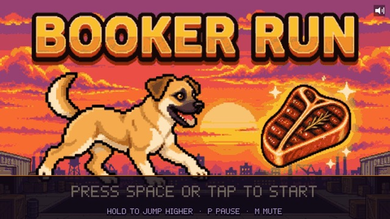
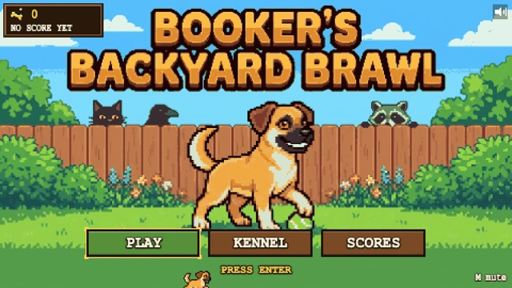
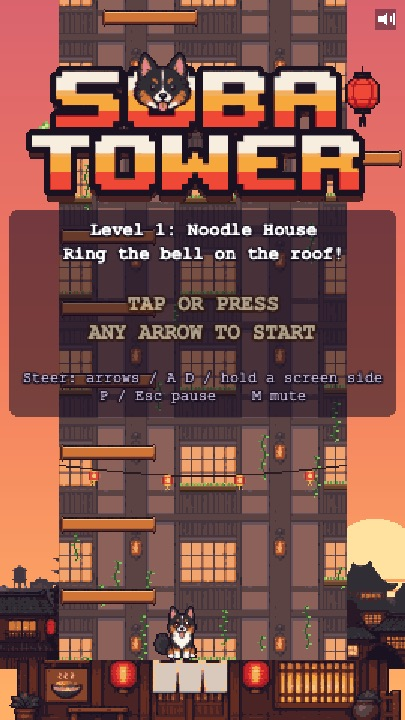
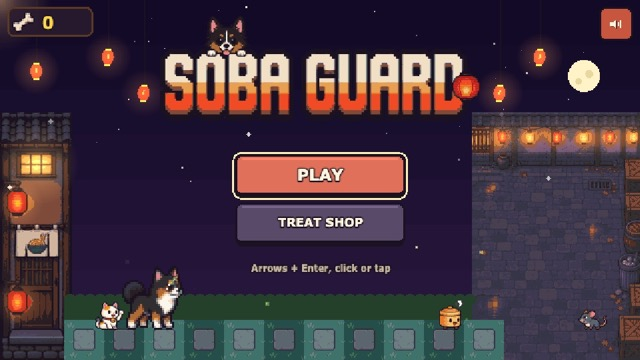
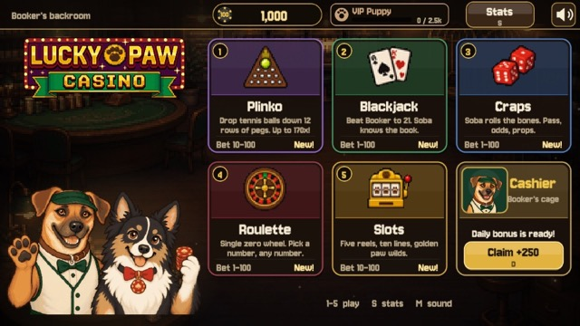

BOOKER ARCADE
Five pixel-art games starring Booker and Soba. Tap a game to play. They run in your browser, so there's nothing to install.

Booker Run
Run, jump, and dodge your way through six levels to reach the steak. Hold to jump higher.
PLAY ▶
Booker's Backyard Brawl
Defend the yard from cats, squirrels, crows, and raccoons. Survive ten waves and beat two bosses.
PLAY ▶
Soba Tower
Soba bounces on her own. Steer her up the noodle-house tower and ring the bell on the roof.
PLAY ▶
Soba Guard
Place kitchen-crew defenders on the garden grid and stop the hungry critters coming up the alley.
PLAY ▶
Lucky Paw Casino
Plinko, Blackjack, Craps, Roulette, and Slots, with Booker as the dealer. Pretend chips only, no real money.
PLAY ▶Tips
- Turn the sound on. Every game has music, and the speaker button or the M key mutes it.
- On a phone, turn off the silent switch or ring/silent mode to hear the sound.
- Your best scores and unlocks save in the browser on this device.
- To get back to this menu, use the browser's Back button.
- To keep the arcade on your phone, open your browser's Share menu and choose Add to Home Screen.